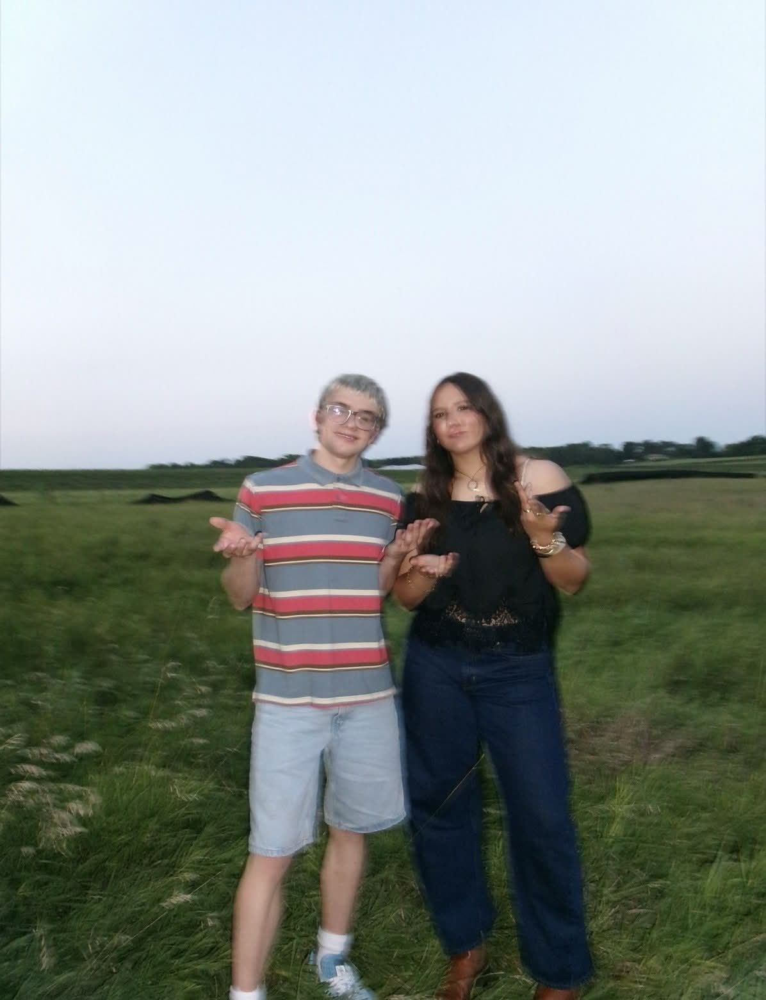

MindLink is a mental health wellness foundation focused on helping people find support, resources, education, and a caring community.
Everyone goes through difficult moments. Finding support should be simple.
MindLink was created to help people find mental health resources, connect with others, and feel supported. Our goal is to build a welcoming foundation that provides education, community programs, wellness tools, and future support services.
Find resources about emotions, stress, anxiety, and where to get help.
Explore Help →Discover self-care activities, wellness ideas, and tools for growth.
Explore Wellness →Create helpful guides and resources that are easy for everyone to understand.
Build spaces where people feel heard, respected, and welcome.
Work toward creating a future hotline and support network for people who need help.

" alt="Zachary Chase Milutin - Founder of MindLink">Founder & Creator of MindLink
MindLink was created with the vision of making mental health support easier to find and building a kinder community.
Read My Story →If you or someone you know needs help, visit our support page to find crisis resources and mental health services.
Emergency Help →